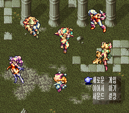
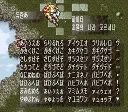

게임 소개
여섯 주인공 가운데 셋을 골라 파티를 짜고, 레벨에 따라 빛·어둠 계열로 전직하며 마나의 검을 찾아가는 액션 RPG입니다. 이 패치는 이미 나와 있는 2017년 한글판 위에 치트만 더합니다. 한글 번역 자체는 한글판 제작진(미러리, 네네쫭, 3phq, narshe, pfhdsf, 아루미)의 작업입니다.
- 원작
- 성검전설3 (스퀘어, 슈퍼패미컴)
- 발매
- 1995년 9월 30일 (일본)
- 장르
- 액션 RPG
- 바탕
- 2017년 한글판 (6MB 롬, 최종 수정 2017/05/17)
치트 내용
메뉴 없이 항상 켜져 있습니다. 게임을 시작하거나 세이브를 불러오면 바로 적용됩니다.
| 루크(돈) | 항상 9,999,999 (게임의 최대값). 물건을 사도 바로 다시 채워집니다. |
|---|---|
| HP·MP | 파티 3명의 HP·MP를 항상 최대로 유지합니다. 이미 쓰러진 동료는 되살리지 않습니다. |
| 경험치 | 몬스터를 쓰러뜨려 얻는 경험치 4배. 레벨이 빨리 올라 전직 시점(레벨 조건)에도 빨리 도달합니다. |
이동속도, 전직 조건 완화는 다음 버전에서 검토합니다. 모든 기술 배우기는 캐릭터별 기술 칸 수가 정해져 있고, 다른 캐릭터의 기술을 넣으면 게임이 멈출 수 있어 넣지 않았습니다.
화면


적용 방법
2017년 한글판 롬 준비
헤더 없는 6MB(6,291,456바이트) 롬이어야 합니다. CRC32
C0DB7517, SHA-166848372b8b09b6ddc3aa0fd0154637a6a99a549.패치 적용
RomPatcher.js(웹)나 Floating IPS(PC)로 적용합니다. 결과 롬 CRC32는
DC33EC30입니다.실행
Snes9x 같은 에뮬레이터에서 실행합니다. 한글판에서 쓰던 세이브를 그대로 이어서 쓸 수 있습니다.
이 IPS는 2017년 한글판 롬용입니다. 일본판 원본이나 다른 한글판에는 맞지 않습니다.
알려진 문제
- HP·MP가 줄지 않으므로 사실상 무적입니다. 긴장감이 필요하면 원래 한글판으로 플레이하세요.
- 경험치 4배는 경험치 계산 루틴에서 확인했고, 후반 지역은 아직 직접 플레이로 확인하지 못했습니다. 이상한 점이 있으면 제보해 주세요.
바뀐 점
v1.0 2026-10-30
- 루크 최대, HP·MP 유지, 경험치 4배 추가
어셈블러: Asar.